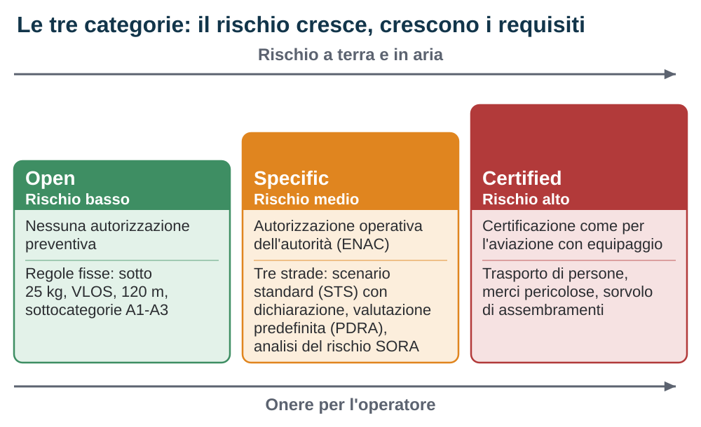

Categoria Specific e prospettive
Quando un'operazione esce dai limiti della categoria Open, non diventa illegale: cambia strada. Questo capitolo è una panoramica di quella strada, la categoria Specific, e di ciò che c'è oltre: la categoria Certified e lo spazio aereo digitale dello U-space. Serve a orientarti e a capire il vocabolario, non a farti diventare un operatore professionale.
- Quando la Open non basta
- Tre strade per l'autorizzazione
- La SORA in due parole
- Il certificato LUC e i voli all'estero
- La categoria Certified
- U-space: lo spazio aereo digitale
- Dove sta andando il settore
Edizione del 20 settembre 2026. Riferimenti normativi verificati sulle versioni consolidate del Regolamento (UE) 2019/947 (1º maggio 2025) e sul Regolamento (UE) 2021/664; documenti EASA consultati alla stessa data.
6.1 Quando la Open non basta
La categoria Open funziona perché i suoi limiti sono fissi e non negoziabili, ma molte operazioni utili non ci stanno dentro. Ispezionare venti chilometri di linea elettrica richiede di volare oltre la linea di vista, e la Open non lo consente fuori dai regimi speciali previsti altrove dal regolamento. Trattare una coltura o consegnare un pacco in volo significa rilasciare materiale, cosa che in Open non è ammessa in nessuna sottocategoria. Poi c'è il caso generale: un'operazione che non soddisfa i requisiti della Open e non rientra in nessuna delle sue eccezioni, come sorvolare persone non coinvolte con un drone che la A2 non ammette.
Operazioni di questo tipo non sono vietate: cambiano regime e passano alla categoria Specific. Se siano eseguibili dipende poi dalla valutazione del rischio e dai permessi ottenuti. Rispetto alla Open cambia il modo in cui i limiti vengono fissati: non un elenco unico, ma condizioni legate alla strada che percorri. Scenari standard e valutazioni predefinite hanno condizioni scritte in anticipo; un'autorizzazione operativa, che in Italia rilascia l'ENAC, ha i limiti scritti nel documento; anche i privilegi di un certificato di operatore hanno un perimetro. In ogni caso il titolo dice cosa puoi fare, dove, con quale drone e per quanto tempo: fuori da lì non vale.

6.2 Tre strade per l'autorizzazione
Il regolamento 2019/947 prevede tre modi, con oneri crescenti, per operare in categoria Specific.
- Scenario standard (STS). Il legislatore europeo ha già descritto alcune operazioni tipiche e ne ha fissato le condizioni. Se la tua operazione vi ricade e usi un drone della classe richiesta, non chiedi un'autorizzazione: presenti una dichiarazione all'autorità e, ricevuta la conferma, voli. Gli scenari europei sono due e dal 1º gennaio 2026 sono gli unici, perché quelli nazionali della transizione sono cessati alla fine del 2025. Lo STS-01 copre il volo a vista sopra un'area a terra controllata in ambiente popolato, fino a 120 m, con un drone di classe C5. Lo STS-02 copre il volo oltre la linea di vista in ambiente scarsamente popolato, sopra un'area a terra controllata, fino a 2 km dal pilota con osservatori dello spazio aereo (1 km senza), con un drone di classe C6. Entrambi richiedono al pilota un certificato specifico, con esame teorico e addestramento pratico.
- Valutazione del rischio predefinita (PDRA). L'EASA pubblica, come materiale esplicativo, alcune valutazioni del rischio già svolte per operazioni ricorrenti: le PDRA. Alcune ricalcano gli scenari standard ma senza richiedere droni con marcatura C5 o C6; altre coprono il volo oltre la linea di vista in aree scarsamente popolate. Chi opera secondo una PDRA chiede l'autorizzazione con una pratica più snella, perché la parte difficile è già fatta, e deve avere le competenze indicate dalla PDRA o dall'autorizzazione: non sono automaticamente quelle del certificato per gli scenari standard.
- Valutazione del rischio completa (SORA). Per tutto il resto, l'operatore svolge una valutazione del rischio secondo la metodologia SORA e la presenta all'autorità, che la esamina e, se convinta, rilascia l'autorizzazione. È la strada più flessibile e più onerosa.
6.3 La SORA in due parole
La SORA è una metodologia sviluppata dal gruppo internazionale JARUS e adottata dall'EASA come mezzo accettabile di rispondenza. Parte dal concetto operativo, la descrizione dell'operazione, e la valuta su due assi. Il rischio a terra dipende da dimensioni ed energia del drone e da chi c'è sotto: area controllata, scarsamente popolata, popolata, assembramento. Il rischio in aria dipende dallo spazio aereo e da quanto è probabile incontrare altri aeromobili. Entrambi si riducono con mitigazioni: un paracadute, una zona cuscinetto, osservatori, un sistema che rileva il traffico.
Combinando i due rischi residui si ottiene il SAIL, su una scala da I a VI. A ogni SAIL corrisponde un elenco di obiettivi di sicurezza operativa da soddisfare con robustezza crescente: procedure scritte, addestramento, manutenzione, affidabilità del drone. Salendo di SAIL non cambia la quantità di carte, ma il livello di prova: ai livelli bassi basta descrivere una procedura e dichiararne l'applicazione, a quelli alti serve un'evidenza verificata da un soggetto indipendente. Dal 29 settembre 2025 l'EASA ha adottato la versione 2.5 della metodologia, che rivede il calcolo del rischio a terra e le mitigazioni; il periodo di transizione dalla 2.0 è deciso da ciascuno Stato.
6.4 Il certificato LUC e i voli all'estero
Un operatore che svolge molte operazioni Specific può chiedere un LUC, un certificato di organizzazione rilasciato dall'autorità dopo aver verificato il sistema di gestione della sicurezza. Con il LUC l'operatore può, entro i privilegi concessi, autorizzare da sé le proprie operazioni. È lo strumento dei grandi operatori: società di ispezioni, enti pubblici, gestori di reti.
L'autorizzazione operativa è rilasciata dallo Stato in cui l'operatore è registrato e non si estende da sé agli altri Stati. Per svolgere altrove un'operazione già autorizzata il regolamento prevede una procedura dedicata, all'articolo 13: l'operatore presenta allo Stato in cui intende operare la domanda con l'autorizzazione ottenuta, e non può iniziare finché quello Stato non ha confermato le mitigazioni necessarie alle condizioni locali, a partire dalle zone geografiche. Per gli scenari standard il percorso è diverso: si trasmette allo Stato ospitante copia della dichiarazione e della conferma di ricevimento e completezza dello Stato di registrazione. Restano tre piani distinti: la registrazione dell'operatore, la competenza del pilota e l'autorizzazione della singola operazione.
6.5 La categoria Certified
La categoria Certified si applica quando il rischio è tale da richiedere un approccio identico a quello dell'aviazione con equipaggio: il drone ha un certificato di tipo e di navigabilità, l'operatore un certificato di operatore, il pilota una licenza. Il regolamento la prevede per il sorvolo di assembramenti con droni di dimensione caratteristica superiore a 3 m, per il trasporto di persone e di merci pericolose ad alto rischio, e ogni volta che l'autorità ritiene insufficiente la valutazione del rischio Specific. È il terreno degli aerotaxi elettrici e dei grandi droni cargo, con regole di dettaglio ancora in evoluzione.
6.6 U-space: lo spazio aereo digitale
Man mano che i droni aumentano, servono strumenti per farli convivere tra loro e con l'aviazione tradizionale, soprattutto in città e oltre la linea di vista. La risposta europea si chiama U-space: un insieme di servizi digitali, forniti da operatori certificati, che gestiscono il traffico dei droni in porzioni di spazio aereo designate dagli Stati. Il quadro giuridico è il Regolamento (UE) 2021/664, accompagnato dai regolamenti 2021/665 e 2021/666, applicabili dal 26 gennaio 2023. L'articolo 1 del 2021/664 delimita però il proprio ambito: restano fuori alcune operazioni leggere in sottocategoria A1 e quelle svolte nel quadro di club e associazioni di aeromodellismo autorizzati. Prima di dare per scontato che un obbligo U-space ti riguardi, verifica se la tua operazione rientra in queste esclusioni.
Dentro una porzione U-space un operatore deve usare quattro servizi obbligatori: l'identificazione di rete, che trasmette identità e posizione attraverso la rete e non solo via radio locale; la geo-awareness, che fornisce zone e restrizioni aggiornate; l'autorizzazione del volo, che verifica il piano contro gli altri voli prima del decollo; le informazioni sul traffico, che avvisano della presenza di altri aeromobili. Servizi opzionali coprono meteo e conformità al piano. Tutto passa dalla stazione di controllo, senza voce e senza torre.
Nel 2026 lo U-space è ancora in fase di avvio in gran parte d'Europa: gli Stati stanno designando le prime porzioni di spazio aereo e certificando i primi fornitori. Per chi vola in categoria Open l'effetto dipende da dove e come vola: fuori dalle porzioni designate non cambia nulla; dentro, cambia a meno che l'operazione non ricada in una delle esclusioni dell'articolo 1. Il capitolo 5 indica lo stato dell'arte in Italia.
6.7 Dove sta andando il settore
Alcune tendenze sono già visibili. Il volo oltre la linea di vista sta diventando più accessibile per ispezioni e sorveglianza di infrastrutture, grazie agli scenari standard, alle PDRA e ai primi servizi U-space. I droni di classe C5 e C6 stanno arrivando sul mercato e rendono praticabili le dichiarazioni STS. Le consegne restano sperimentali in Europa, con operazioni Specific ad alto SAIL, mentre la mobilità aerea con passeggeri appartiene alla Certified.
La conseguenza pratica per chi legge questa guida: il vocabolario del capitolo serve a riconoscere quando un'operazione esce dalla Open e a leggere notizie e fonti senza fraintenderle.
In sintesi
- La Specific copre le operazioni che non soddisfano i requisiti della Open: volo oltre la linea di vista fuori dai regimi speciali, rilascio di materiale, sorvolo di persone non coinvolte con un drone che la A2 non ammette. Non è un regime senza limiti: cambia il modo in cui i limiti vengono fissati.
- Tre strade: dichiarazione per uno scenario standard (STS-01 con C5, STS-02 con C6), autorizzazione con valutazione predefinita (PDRA), autorizzazione con valutazione completa (SORA). Le competenze richieste al pilota sono quelle della strada scelta.
- La SORA valuta rischio a terra e in aria, applica mitigazioni e assegna un SAIL da I a VI che determina la robustezza delle evidenze.
- Il LUC permette a un operatore certificato di autorizzare da sé le proprie operazioni, entro i privilegi concessi.
- Un'autorizzazione non si estende da sé all'estero: serve la procedura dell'articolo 13, con la conferma dello Stato ospitante prima dell'avvio. Per gli scenari standard si trasmettono dichiarazione e conferma di ricevimento e completezza.
- La Certified riguarda trasporto di persone, merci pericolose e sorvolo di folle con droni grandi.
- Lo U-space (Reg. 2021/664) porta identificazione, geo-awareness, autorizzazione e informazioni sul traffico come servizi digitali, con le esclusioni dell'articolo 1; nel 2026 è in fase di avvio.
6.8 Fonti
- Regolamento di esecuzione (UE) 2019/947, versione consolidata al 1º maggio 2025, articoli 5, 7, 8, 11, 12 e 13 e Appendice 1 (scenari standard STS-01 e STS-02): eur-lex.europa.eu, CELEX 02019R0947-20250501
- Regolamento delegato (UE) 2019/945, versione consolidata al 24 giugno 2025, allegato, parti 16 e 17 (classi C5 e C6): eur-lex.europa.eu, CELEX 02019R0945-20250624
- EASA, Easy Access Rules for Unmanned Aircraft Systems, revisione di giugno 2026, AMC e GM all'articolo 11 (SORA e PDRA): easa.europa.eu, Easy Access Rules UAS, revisione giugno 2026
- Regolamento di esecuzione (UE) 2021/664 relativo a un quadro normativo per lo U-space, articolo 1 (ambito ed esclusioni): eur-lex.europa.eu, 2021/664 in Gazzetta ufficiale